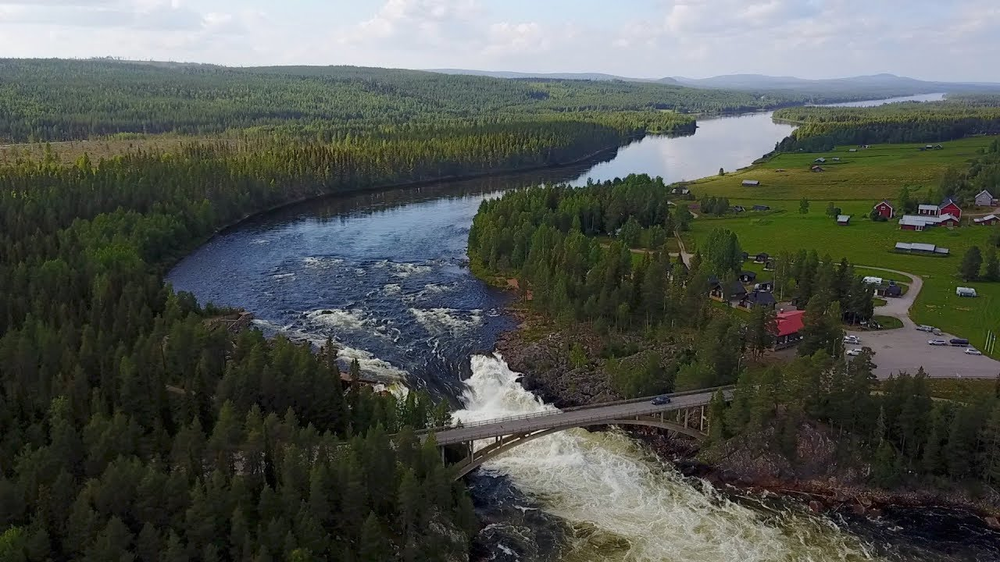

Min Sommarberättelse
Det absolut tråkigaste jag gjort i sommar var att åka tåg till norrbotten men jag har också gjort en rolig grej och det var att inte göra något. Jag har badat 2 gånger och det kändes roligt. Det godaste jag åt i somras var grillat och jag skulle vilja jämför smaken med din mamma. En tv-serie som jag upptäckte i somras var abdulli's sommar och den skulle jag vilja rekommendera till alla som tycker om koranen. En person som jag träffade i somras var Christian Olsson och jag skulle vilja citera hen genom att säga OS guld 2004 i tresteg. Vid ett tilfälle i somras åkte jag till tornedalen där var det både myggigt och ljust. Jag skulle vilja sammanfatat min sommar med tre ord händelselös, utvilande, och sjukligt. En helt okej sommar men nog har jag längtat efter att jag ska få börja skolan igen och jag tror att detta år på NTI kommer att bli väldigt stressande.